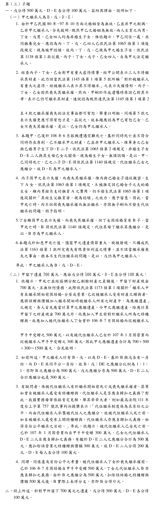
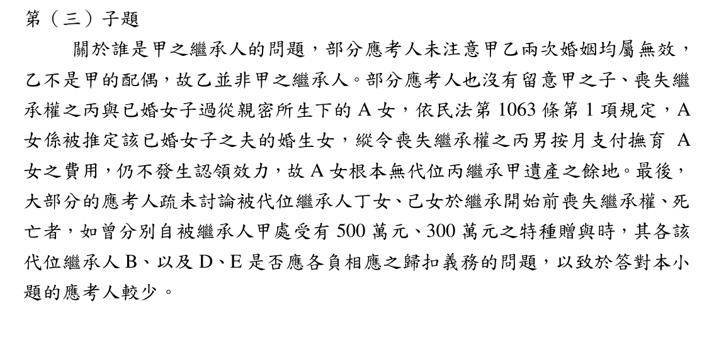

700萬元，三房怎麼分？
111年律師第二試｜民法與民事訴訟法（一）｜第二題第（三）小題（20分）
題目
這一題有三個小題。本頁只做第（三）小題，用得到的事實畫黃色底線。
- （一）假設乙曾於105年10月向法院訴請確認甲乙婚姻無效，並請求甲為夫妻剩餘財產差額之平均分配。乙之訴，是否有理？（20分）
- （二）甲死亡後，若經協調分配乙剩餘財產之差額後，甲遺有現金200萬元，惟甲尚欠債權人庚1100萬元未還。庚訴請戊清償上開1100萬元之債務，是否有理？（10分）
- （三）甲死亡後，若經協調分配乙剩餘財產之差額後，甲遺有現金700萬元，且無任何債務。甲之遺產應如何分配？（20分）本頁只做這一題
影片說明
影片依序示範：主播介紹、整題讀一遍並框出第（三）小題、三排關係圖、學弟學姊帶出三步、乙非配偶與表示失權、己被原諒但同時死亡、A不能代位與B代位、三房分家、111年度台上字第757號判決與歸扣、三個易錯點，最後把擬答從頭看一遍。
關係圖（應繼分標在人旁）
答題順序：三步
閱卷委員指出：部分考生沒注意乙不是配偶、A 不能代位；大部分考生沒討論代位繼承人的歸扣義務，所以答對的人較少。
本題用到的條文與判決
先看要件，再套本案事實。原文中畫底線的部分，就是本題用到的那一句。
民法第1145條：表示失權與宥恕（第①步）
有左列各款情事之一者，喪失其繼承權：……五、對於被繼承人有重大之虐待或侮辱情事，經被繼承人表示其不得繼承者。
前項第二款至第四款之規定，如經被繼承人宥恕者，其繼承權不喪失。
白話重大虐待被繼承人、而且被繼承人表示不讓他繼承，就喪失繼承權。第2項的「原諒就不喪失」，條文只列第2到4款。
本題丙、丁、己都喪失繼承權。甲以遺囑原諒己；評分要點認為第5款是被繼承人自己決定的，舉重以明輕，更可以宥恕，所以己不喪失繼承權。
注意評分要點稱此為「通說」；本頁尚未查到可核對的學說出處，擬答只寫「舉重明輕」。
民法第11條、第1140條：同時死亡與代位繼承（第①步）
二人以上同時遇難，不能證明其死亡之先後時，推定其為同時死亡。（第11條）
第一千一百三十八條所定第一順序之繼承人，有於繼承開始前死亡或喪失繼承權者，由其直系血親卑親屬代位繼承其應繼分。（第1140條）
白話繼承人要在被繼承人死亡時還活著（同時存在原則）。同時死亡的人不能繼承彼此，改由他的子女代位；喪失繼承權的人，也由子女代位。
本題題目明示甲、己同時死亡，己不繼承甲，由 D、E 代位；丁失權，由 B 代位。
民法第1063條第1項、第1065條第1項：A 為什麼不能代位（第①步）
妻之受胎，係在婚姻關係存續中者，推定其所生子女為婚生子女。（第1063條第1項）
非婚生子女經生父認領者，視為婚生子女。其經生父撫育者，視為認領。（第1065條第1項）
白話已婚女子生的孩子，法律先推定是她丈夫的孩子。推定還沒被推翻前，丙就算按月付撫育費，也不會變成「視為認領」。
本題A 和丙在法律上沒有父女關係，不能代位丙；丙又喪失繼承權，丙這一房就沒有人。
民法第1173條：特種贈與的歸扣（第②③步）
繼承人中有在繼承開始前因結婚、分居或營業，已從被繼承人受有財產之贈與者，應將該贈與價額加入繼承開始時被繼承人所有之財產中，為應繼遺產。但被繼承人於贈與時有反對之意思表示者，不在此限。
前項贈與價額，應於遺產分割時，由該繼承人之應繼分中扣除。
贈與價額，依贈與時之價值計算。
白話為了結婚、分居、開店拿到的錢，算是預支遺產：先加回去算總額，分的時候再從那個人的份扣掉。
本題丁結婚500萬、己營業300萬要加回；丙的200萬元是考上高考的獎賞，不是這三種，不加。
最高法院111年度台上字第757號民事判決（111.05.18）（第③步）
……由是而論，代位繼承制度係為求房份之公平，而由代位繼承人承襲被代位人之應繼分，故被代位繼承人死亡前，如自被繼承人處受有上開特種贈與，代位繼承人亦應負歸扣之義務，始符房份公平繼承之目的。
白話代位的人是接下父母那一房的份，父母生前拿過的預支款，這一房也要扣。
注意這段出自最高法院「本院之判斷」第四點㈠。該案是被代位人先死亡；本題丁是喪失繼承權，用同一道理處理是評分要點的延伸，所以擬答寫「參照」。該案最高法院廢棄發回，更審認定房地為特種贈與並歸扣，最高法院113年度台上字第1101號裁定以上訴不合法駁回（歷審七筆由 Codex 逐筆打開核對）。
條文依全國法規資料庫現行條文核對（2026-11-23），甲於108年死亡時已是現行內容。111台上757已打開全文核對引文。
答題地圖
考選部評分要點與閱卷委員的話

評分要點第8頁寫「單身之己女與已婚男子生下D、E二子」；題目原文是「己未婚生下D、E二女」，題目並未提到「已婚男子」。本頁照題目原文。
閱卷委員的話：
- 部分考生未注意甲乙兩次婚姻均無效，乙不是配偶、不是繼承人。
- 部分考生沒注意 A 受第1063條第1項推定，丙的撫育不生認領效力，A 不能代位。
- 大部分考生疏未討論代位繼承人 B、D、E 的歸扣義務，答對的考生較少。

來源：考選部〈111年司法官、律師考試第二試法律專業科目評分要點與閱卷委員的話〉民法與民事訴訟法（一）第7至10頁，已用PyMuPDF轉成圖片逐頁核對。
擬答
戊分得500萬元，D、E各分得100萬元，B分得0元。
一、甲之繼承人為B、戊、D、E
（一）甲乙婚姻無效，乙非配偶；丙、丁、戊、己經甲撫育，視為認領（第1065條第1項後段），為第一順序繼承人。
（二）丙、丁、己經甲表示失權（第1145條第1項第5款）。甲宥恕己，同條第2項雖未列第5款，舉重明輕，己不喪失繼承權；惟己與甲同時死亡，不符同時存在原則，由D、E代位（第1140條）。丁之子B代位。A受婚生推定（第1063條第1項），丙之撫育不生認領效力，不能代位。戊隱匿遺產僅不得主張限定責任，仍為繼承人。
二、遺產之分配
（一）丁之結婚贈與500萬元、己之營業贈與300萬元屬特種贈與（第1173條），丙之高考獎賞則否。代位繼承人承襲被代位人之應繼分，基於房份公平，亦應歸扣（最高法院111年度台上字第757號判決參照）。
（二）應繼遺產1500萬元（700＋500＋300），三房各500萬元。B扣除500萬元為0元；戊500萬元；D、E扣除300萬元後各100萬元。
擬答430字（含標題、標點與數字，不含空白，以程式計算）。20分題目參考上限429字（120分鐘×20/150＝16分鐘，扣讀題3分鐘，13分鐘×每分鐘約33字）；略超1字。
互動：換一個情況，三房怎麼分？
關鍵是「誰算一房」和「哪些贈與要加回、扣除」。先自己想想，再點。
第二、三個分頁是本頁為了比較所做的假設（第三個分頁假設己在甲死亡後仍生存，且已受宥恕），金額由頁面程式計算。本頁推論
學說補充
第1145條第2項宥恕可否類推及於第5款、代位繼承人歸扣義務的學說討論，本頁尚未加入可核對的學說文獻。
預想易錯點
依閱卷委員的話整理。
| 可能的錯誤 | 應該怎麼寫 |
|---|---|
| ① 把乙當成配偶繼承人 | 甲乙兩次婚姻均無效（第（一）小題），乙不是配偶。 |
| ② 讓 A 代位丙 | A 受第1063條第1項婚生推定，丙的撫育不生認領效力，A 不能代位。 |
| ③ 忘了代位繼承人也要歸扣 | B、D、E 承襲被代位人的應繼分，丁、己受的特種贈與也要扣（111台上757參照）。 |
延伸思考
參考資料
歡迎指正
相關連結
民法講義總覽 上一題：111年第二題（二）甲欠1100萬，只留200萬，戊要全還嗎？ 111年第二題（一）結婚兩次都無效，還能分財產嗎？ GitHub 原始檔